A quick tour of mclust
Luca Scrucca
19 Nov 2025
mclust.RmdIntroduction
mclust is a contributed R package for model-based clustering, classification, and density estimation based on finite normal mixture modelling. It provides functions for parameter estimation via the EM algorithm for normal mixture models with a variety of covariance structures, and functions for simulation from these models. Also included are functions that combine model-based hierarchical clustering, EM for mixture estimation and the Bayesian Information Criterion (BIC) in comprehensive strategies for clustering, density estimation and discriminant analysis. Additional functionalities are available for displaying and visualizing fitted models along with clustering, classification, and density estimation results.
This document gives a quick tour of mclust (version
6.1.2) functionalities. It was written in R Markdown, using the knitr package for
production. See help(package="mclust") for further details
and references provided by citation("mclust").
Clustering
data(diabetes)
#-- data corrections (see help("diabetes", package = "mclust")) --#
names(diabetes) <- c("class", "fpg", "glucose", "insulin")
diabetes$glucose[104] <- 455
#-----------------------------------------------------------------#
class <- diabetes$class
table(class)
## class
## Chemical Normal Overt
## 36 76 33
X <- diabetes[,-1]
head(X)
## fpg glucose insulin
## 1 80 356 124
## 2 97 289 117
## 3 105 319 143
## 4 90 356 199
## 5 90 323 240
## 6 86 381 157
clPairs(X, class)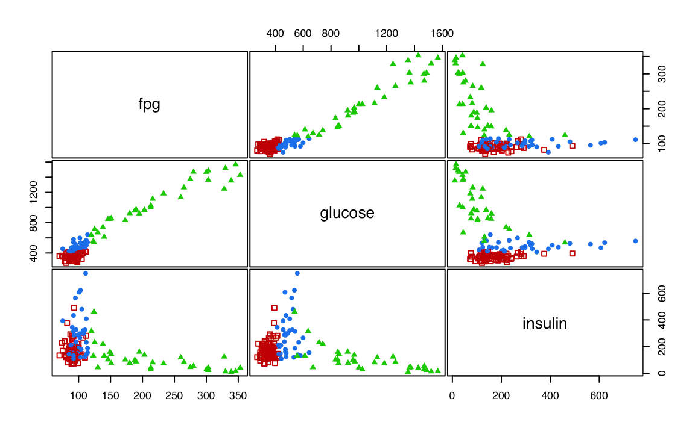
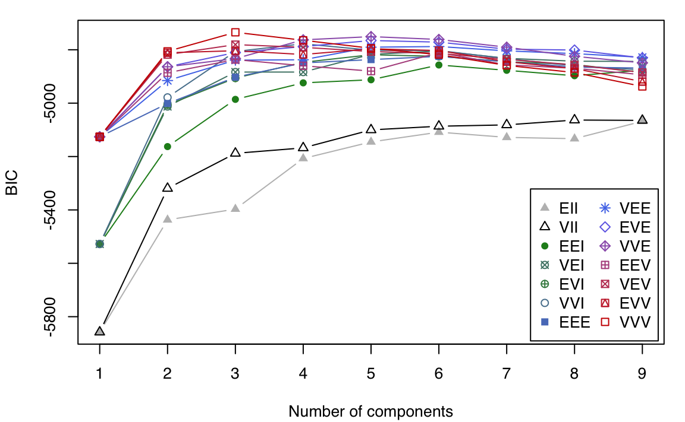
summary(BIC)
## Best BIC values:
## VVV,3 VVE,5 VVE,6
## BIC -4734.561 -4750.75832 -4761.35626
## BIC diff 0.000 -16.19685 -26.79479
mod1 <- Mclust(X, x = BIC)
summary(mod1, parameters = TRUE)
## ----------------------------------------------------
## Gaussian finite mixture model fitted by EM algorithm
## ----------------------------------------------------
##
## Mclust VVV (ellipsoidal, varying volume, shape, and orientation) model with 3
## components:
##
## log-likelihood n df BIC ICL
## -2295.118 145 29 -4734.561 -4749.16
##
## Clustering table:
## 1 2 3
## 82 35 28
##
## Mixing probabilities:
## 1 2 3
## 0.5553630 0.2479432 0.1966939
##
## Means:
## [,1] [,2] [,3]
## fpg 91.35843 104.6401 230.32908
## glucose 357.86717 515.7332 1103.21235
## insulin 165.85059 314.5807 81.40487
##
## Variances:
## [,,1]
## fpg glucose insulin
## fpg 61.41309 93.8443 33.84212
## glucose 93.84430 2051.4193 365.21412
## insulin 33.84212 365.2141 2643.75977
## [,,2]
## fpg glucose insulin
## fpg 194.3494 940.1594 -546.2879
## glucose 940.1594 7271.8069 -2775.9918
## insulin -546.2879 -2775.9918 24757.4385
## [,,3]
## fpg glucose insulin
## fpg 5451.219 19936.61 -2473.121
## glucose 19936.610 80705.15 -10272.620
## insulin -2473.121 -10272.62 2243.084
plot(mod1, what = "classification")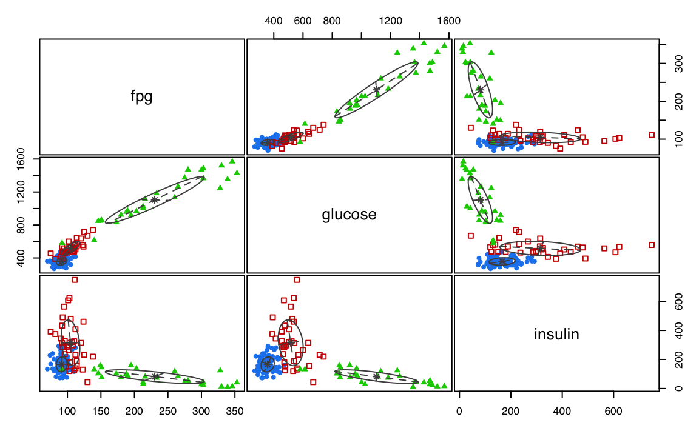
table(class, mod1$classification)
##
## class 1 2 3
## Chemical 8 27 1
## Normal 74 2 0
## Overt 0 6 27
plot(mod1, what = "uncertainty")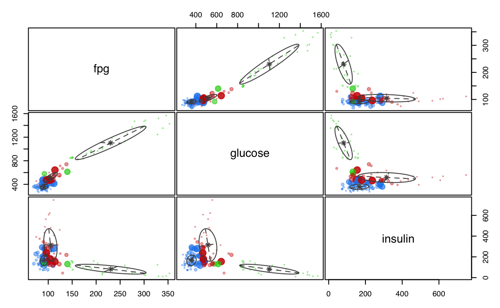
ICL <- mclustICL(X)
summary(ICL)
## Best ICL values:
## VVV,3 VVE,4 EVE,5
## ICL -4749.16 -4778.76438 -4781.49369
## ICL diff 0.00 -29.60428 -32.33359
plot(ICL)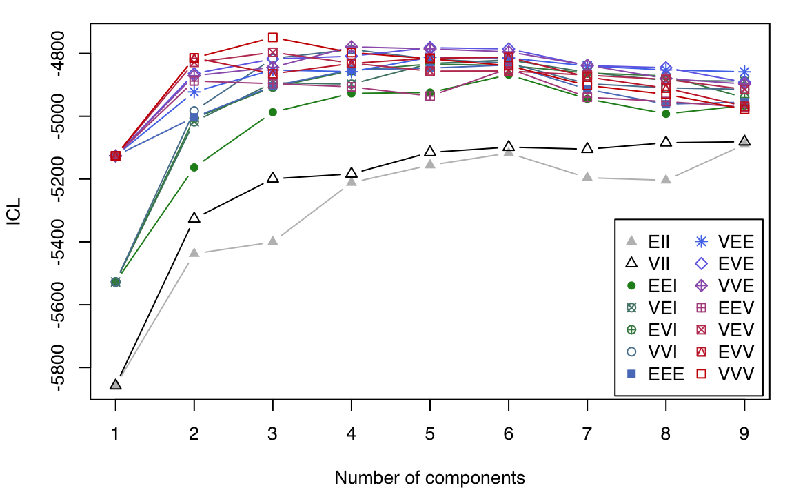
LRT <- mclustBootstrapLRT(X, modelName = "VVV")
LRT
## -------------------------------------------------------------
## Bootstrap sequential LRT for the number of mixture components
## -------------------------------------------------------------
## Model = VVV
## Replications = 999
## LRTS bootstrap p-value
## 1 vs 2 369.98537 0.001
## 2 vs 3 121.10652 0.001
## 3 vs 4 19.90071 0.283Initialisation
EM algorithm is used by mclust for maximum
likelihood estimation. Initialisation of EM is performed using the
partitions obtained from agglomerative hierarchical clustering. For
details see help(mclustBIC) or help(Mclust),
and help(hc).
(hc1 <- hc(X, modelName = "VVV", use = "SVD"))
## Call:
## hc(data = X, modelName = "VVV", use = "SVD")
##
## Model-Based Agglomerative Hierarchical Clustering
## Model name = VVV
## Use = SVD
## Number of objects = 145
BIC1 <- mclustBIC(X, initialization = list(hcPairs = hc1)) # default
summary(BIC1)
## Best BIC values:
## VVV,3 VVE,5 VVE,6
## BIC -4734.561 -4750.75832 -4761.35626
## BIC diff 0.000 -16.19685 -26.79479
(hc2 <- hc(X, modelName = "VVV", use = "VARS"))
## Call:
## hc(data = X, modelName = "VVV", use = "VARS")
##
## Model-Based Agglomerative Hierarchical Clustering
## Model name = VVV
## Use = VARS
## Number of objects = 145
BIC2 <- mclustBIC(X, initialization = list(hcPairs = hc2))
summary(BIC2)
## Best BIC values:
## VVV,3 VVE,3 EVE,5
## BIC -4734.53 -4759.36113 -4765.3420
## BIC diff 0.00 -24.83078 -30.8116
(hc3 <- hc(X, modelName = "EEE", use = "SVD"))
## Call:
## hc(data = X, modelName = "EEE", use = "SVD")
##
## Model-Based Agglomerative Hierarchical Clustering
## Model name = EEE
## Use = SVD
## Number of objects = 145
BIC3 <- mclustBIC(X, initialization = list(hcPairs = hc3))
summary(BIC3)
## Best BIC values:
## VVV,3 VVE,4 VVV,4
## BIC -4734.53 -4740.185182 -4755.40561
## BIC diff 0.00 -5.654734 -20.87517Update BIC by merging the best results:
BIC <- mclustBICupdate(BIC1, BIC2, BIC3)
summary(BIC)
## Best BIC values:
## VVV,3 VVE,4 VVE,5
## BIC -4734.53 -4740.185182 -4750.75832
## BIC diff 0.00 -5.654828 -16.22797
plot(BIC)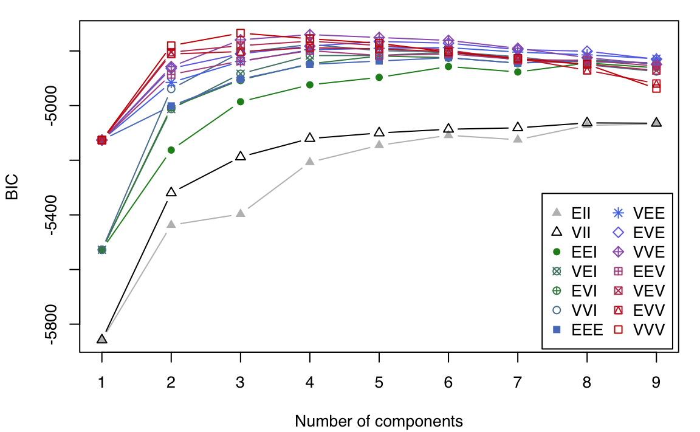
Univariate fit using random starting points obtained by creating
random agglomerations (see help(hcRandomPairs)) and merging
best results:
data(galaxies, package = "MASS")
galaxies <- galaxies / 1000
BIC <- NULL
for(j in 1:20)
{
rBIC <- mclustBIC(galaxies, verbose = FALSE,
initialization = list(hcPairs = hcRandomPairs(galaxies)))
BIC <- mclustBICupdate(BIC, rBIC)
}
summary(BIC)
## Best BIC values:
## V,3 V,4 V,5
## BIC -441.6122 -443.399746 -446.34966
## BIC diff 0.0000 -1.787536 -4.73745
plot(BIC)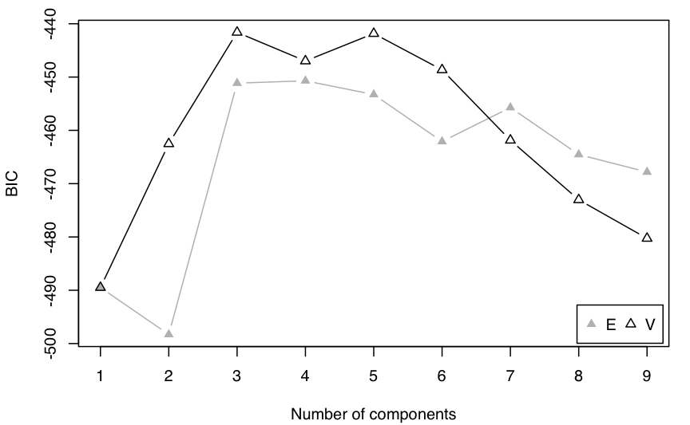
mod <- Mclust(galaxies, x = BIC)
summary(mod)
## ----------------------------------------------------
## Gaussian finite mixture model fitted by EM algorithm
## ----------------------------------------------------
##
## Mclust V (univariate, unequal variance) model with 3 components:
##
## log-likelihood n df BIC ICL
## -203.1792 82 8 -441.6122 -441.6126
##
## Clustering table:
## 1 2 3
## 3 7 72Classification
EDDA
data(iris)
class <- iris$Species
table(class)
## class
## setosa versicolor virginica
## 50 50 50
X <- iris[,1:4]
head(X)
## Sepal.Length Sepal.Width Petal.Length Petal.Width
## 1 5.1 3.5 1.4 0.2
## 2 4.9 3.0 1.4 0.2
## 3 4.7 3.2 1.3 0.2
## 4 4.6 3.1 1.5 0.2
## 5 5.0 3.6 1.4 0.2
## 6 5.4 3.9 1.7 0.4
mod2 <- MclustDA(X, class, modelType = "EDDA")
summary(mod2)
## ------------------------------------------------
## Gaussian finite mixture model for classification
## ------------------------------------------------
##
## EDDA
## ------------------------------------------------
## log-likelihood n df BIC
## -187.7097 150 38 -565.8236
##
## Classes n % Model G
## setosa 50 33.33 VEV 1
## versicolor 50 33.33 VEV 1
## virginica 50 33.33 VEV 1
##
## Training confusion matrix
## ------------------------------------------------
## Predicted
## Classes setosa versicolor virginica
## setosa 50 0 0
## versicolor 0 47 3
## virginica 0 0 50
##
## Classification error = 0.0200
## Brier score = 0.0127
plot(mod2, what = "scatterplot")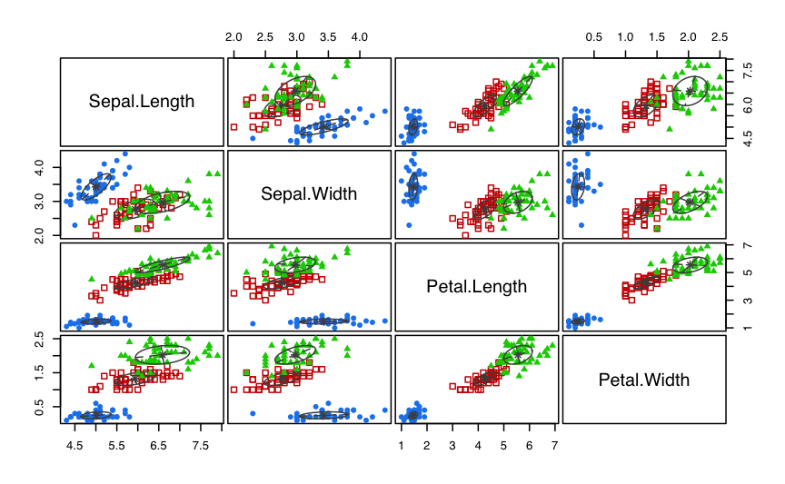
plot(mod2, what = "classification")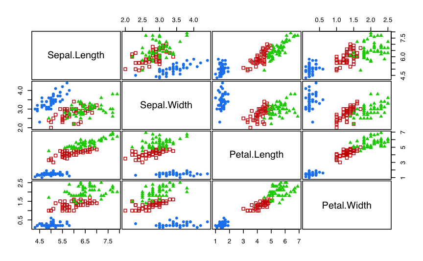
MclustDA
data(banknote)
class <- banknote$Status
table(class)
## class
## counterfeit genuine
## 100 100
X <- banknote[,-1]
head(X)
## Length Left Right Bottom Top Diagonal
## 1 214.8 131.0 131.1 9.0 9.7 141.0
## 2 214.6 129.7 129.7 8.1 9.5 141.7
## 3 214.8 129.7 129.7 8.7 9.6 142.2
## 4 214.8 129.7 129.6 7.5 10.4 142.0
## 5 215.0 129.6 129.7 10.4 7.7 141.8
## 6 215.7 130.8 130.5 9.0 10.1 141.4
mod3 <- MclustDA(X, class)
summary(mod3)
## ------------------------------------------------
## Gaussian finite mixture model for classification
## ------------------------------------------------
##
## MclustDA
## ------------------------------------------------
## log-likelihood n df BIC
## -646.0801 200 67 -1647.147
##
## Classes n % Model G
## counterfeit 100 50 EVE 2
## genuine 100 50 XXX 1
##
## Training confusion matrix
## ------------------------------------------------
## Predicted
## Classes counterfeit genuine
## counterfeit 100 0
## genuine 0 100
##
## Classification error = 0.0000
## Brier score = 0.0000
plot(mod3, what = "scatterplot")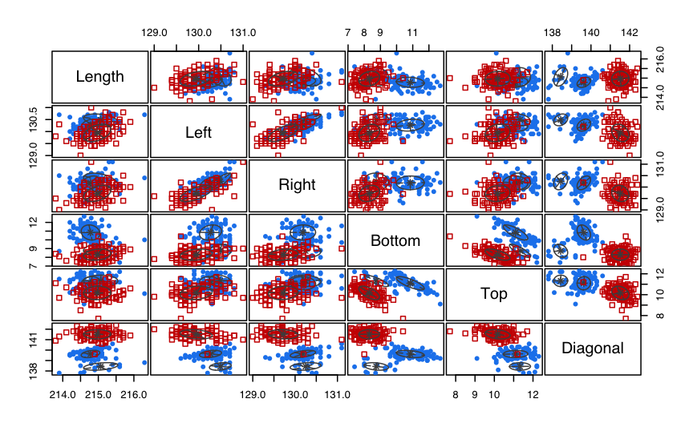
plot(mod3, what = "classification")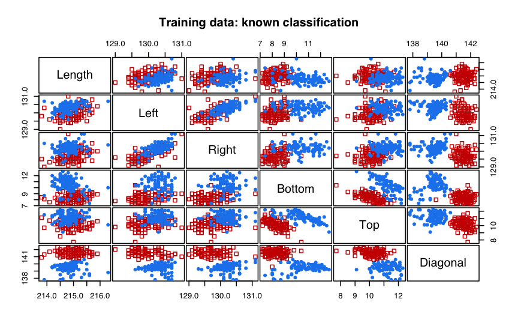
Cross-validation error
cv <- cvMclustDA(mod2, nfold = 10)
str(cv)
## List of 6
## $ classification: Factor w/ 3 levels "setosa","versicolor",..: 1 1 1 1 1 1 1 1 1 1 ...
## $ z : num [1:150, 1:3] 1 1 1 1 1 1 1 1 1 1 ...
## ..- attr(*, "dimnames")=List of 2
## .. ..$ : NULL
## .. ..$ : chr [1:3] "setosa" "versicolor" "virginica"
## $ ce : num 0.0267
## $ se.ce : num 0.0109
## $ brier : num 0.0208
## $ se.brier : num 0.00738
unlist(cv[3:6])
## ce se.ce brier se.brier
## 0.026666667 0.010886621 0.020795887 0.007383247
cv <- cvMclustDA(mod3, nfold = 10)
str(cv)
## List of 6
## $ classification: Factor w/ 2 levels "counterfeit",..: 2 2 2 2 2 2 2 2 2 2 ...
## $ z : num [1:200, 1:2] 1.56e-06 3.50e-19 5.41e-28 3.33e-20 2.42e-29 ...
## ..- attr(*, "dimnames")=List of 2
## .. ..$ : NULL
## .. ..$ : chr [1:2] "counterfeit" "genuine"
## $ ce : num 0.005
## $ se.ce : num 0.005
## $ brier : num 0.00514
## $ se.brier : num 0.00498
unlist(cv[3:6])
## ce se.ce brier se.brier
## 0.005000000 0.005000000 0.005135796 0.004980123Density estimation
Univariate
data(acidity)
mod4 <- densityMclust(acidity)
summary(mod4)
## -------------------------------------------------------
## Density estimation via Gaussian finite mixture modeling
## -------------------------------------------------------
##
## Mclust E (univariate, equal variance) model with 2 components:
##
## log-likelihood n df BIC ICL
## -185.9493 155 4 -392.0723 -398.5554
plot(mod4, what = "BIC")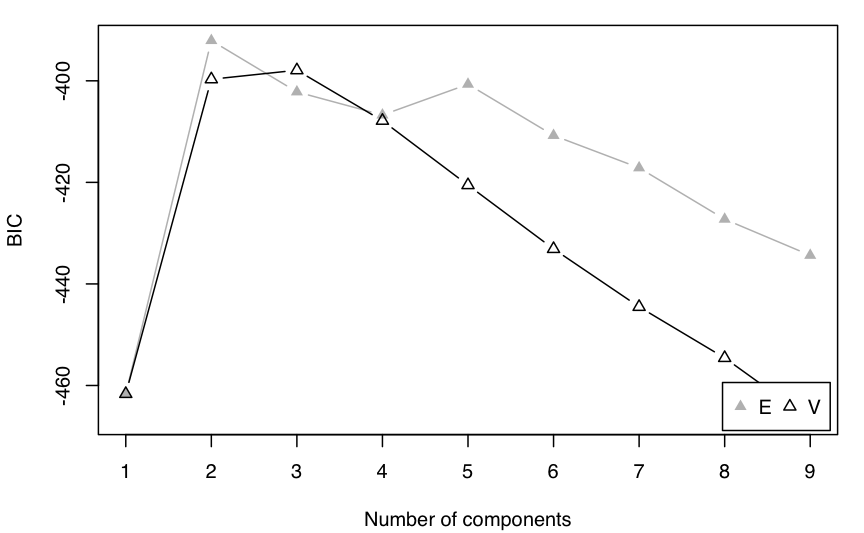
plot(mod4, what = "density", data = acidity, breaks = 15)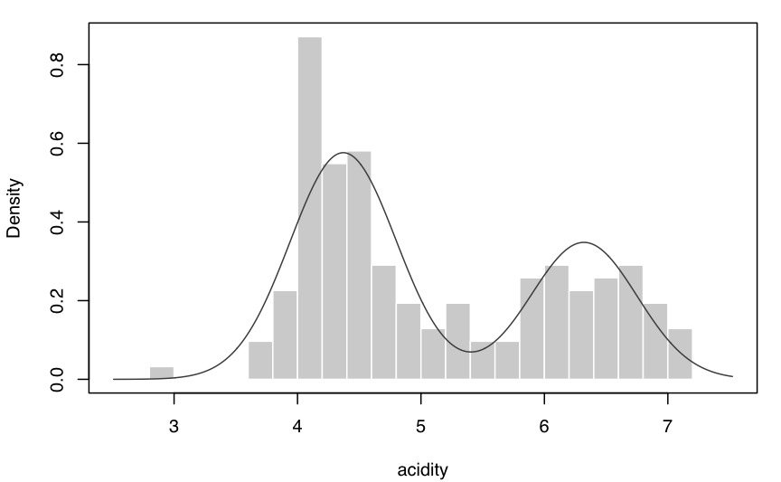
plot(mod4, what = "diagnostic", type = "cdf")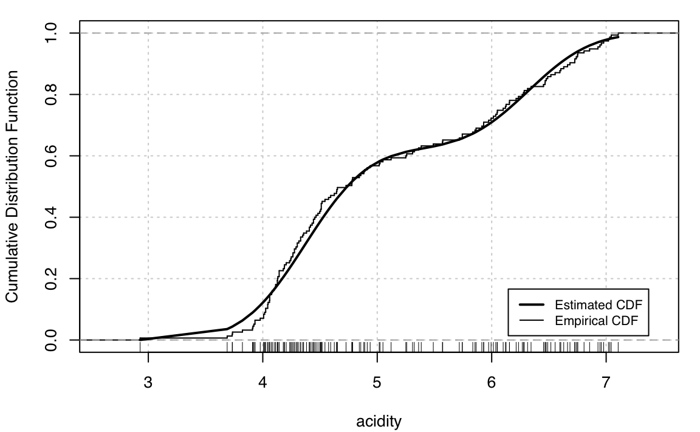
plot(mod4, what = "diagnostic", type = "qq")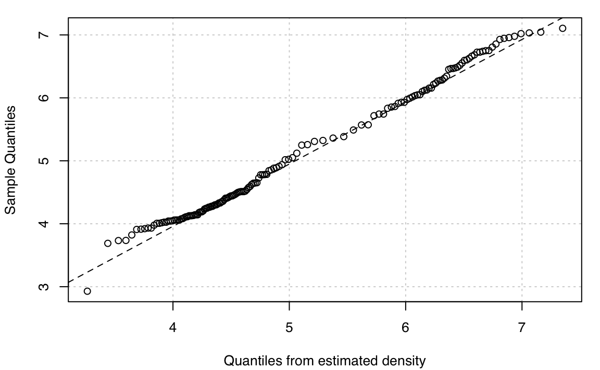
Multivariate
data(faithful)
mod5 <- densityMclust(faithful)
summary(mod5)
## -------------------------------------------------------
## Density estimation via Gaussian finite mixture modeling
## -------------------------------------------------------
##
## Mclust EEE (ellipsoidal, equal volume, shape and orientation) model with 3
## components:
##
## log-likelihood n df BIC ICL
## -1126.326 272 11 -2314.316 -2357.824
plot(mod5, what = "BIC")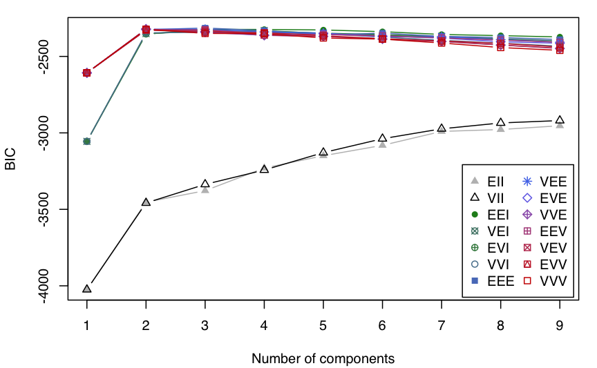
plot(mod5, what = "density", type = "hdr", data = faithful, points.cex = 0.5)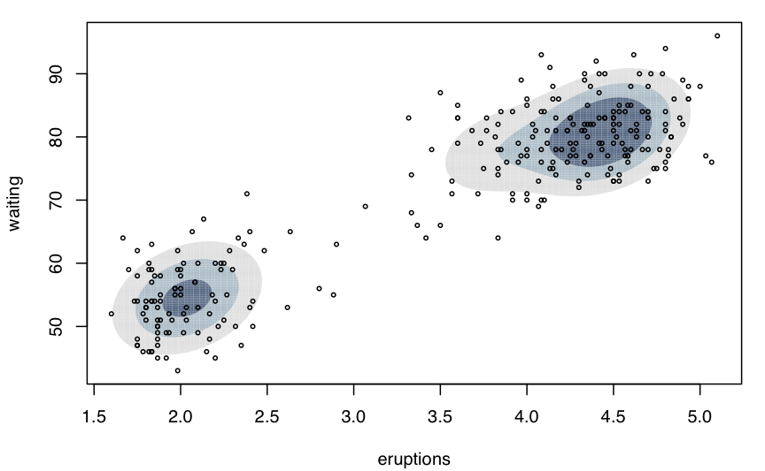
plot(mod5, what = "density", type = "persp")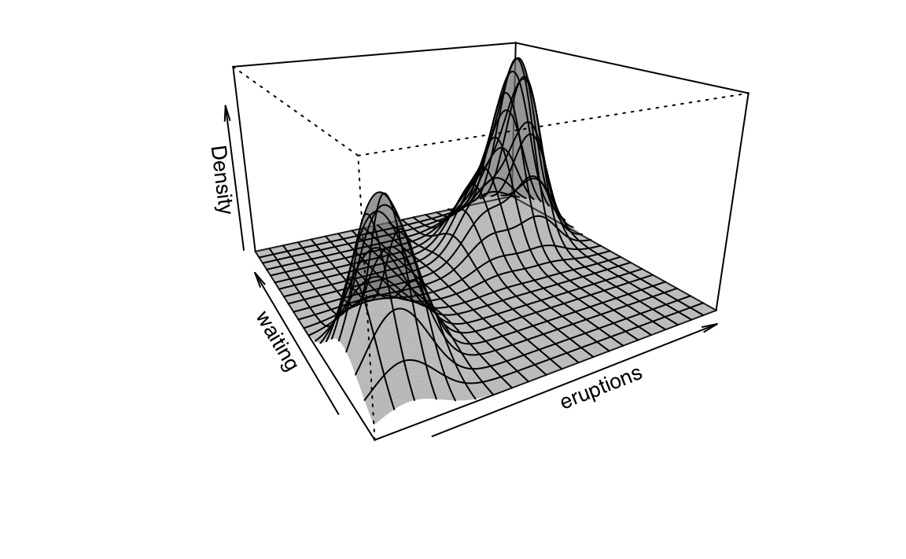
Bootstrap inference
boot1 <- MclustBootstrap(mod1, nboot = 999, type = "bs")
summary(boot1, what = "se")
## ----------------------------------------------------------
## Resampling standard errors
## ----------------------------------------------------------
## Model = VVV
## Num. of mixture components = 3
## Replications = 999
## Type = nonparametric bootstrap
##
## Mixing probabilities:
## 1 2 3
## 0.04962408 0.04679956 0.03568767
##
## Means:
## 1 2 3
## fpg 1.029210 3.431536 16.45148
## glucose 7.348229 23.102112 63.57099
## insulin 6.890494 32.494958 10.35781
##
## Variances:
## [,,1]
## fpg glucose insulin
## fpg 11.22247 51.32446 54.33822
## glucose 51.32446 491.07894 370.15616
## insulin 54.33822 370.15616 559.97118
## [,,2]
## fpg glucose insulin
## fpg 63.0556 414.6464 448.4747
## glucose 414.6464 3039.4632 3016.3035
## insulin 448.4747 3016.3035 7049.5005
## [,,3]
## fpg glucose insulin
## fpg 1003.569 3970.504 680.3030
## glucose 3970.504 17898.128 2492.8805
## insulin 680.303 2492.881 588.4059
summary(boot1, what = "ci")
## ----------------------------------------------------------
## Resampling confidence intervals
## ----------------------------------------------------------
## Model = VVV
## Num. of mixture components = 3
## Replications = 999
## Type = nonparametric bootstrap
## Confidence level = 0.95
##
## Mixing probabilities:
## 1 2 3
## 2.5% 0.4609834 0.1469903 0.1311157
## 97.5% 0.6607129 0.3354713 0.2701468
##
## Means:
## [,,1]
## fpg glucose insulin
## 2.5% 89.41502 344.5513 153.5648
## 97.5% 93.43859 373.0637 180.4059
## [,,2]
## fpg glucose insulin
## 2.5% 98.15373 475.4215 258.5614
## 97.5% 111.47178 567.0759 386.4861
## [,,3]
## fpg glucose insulin
## 2.5% 198.4823 977.025 63.04963
## 97.5% 263.9015 1228.576 103.91638
##
## Variances:
## [,,1]
## fpg glucose insulin
## 2.5% 39.89112 1208.988 1722.407
## 97.5% 83.56151 3139.945 3959.596
## [,,2]
## fpg glucose insulin
## 2.5% 89.47421 2338.032 13035.79
## 97.5% 336.72367 14195.303 39635.30
## [,,3]
## fpg glucose insulin
## 2.5% 3347.581 47557.08 1320.557
## 97.5% 7267.330 117148.25 3615.588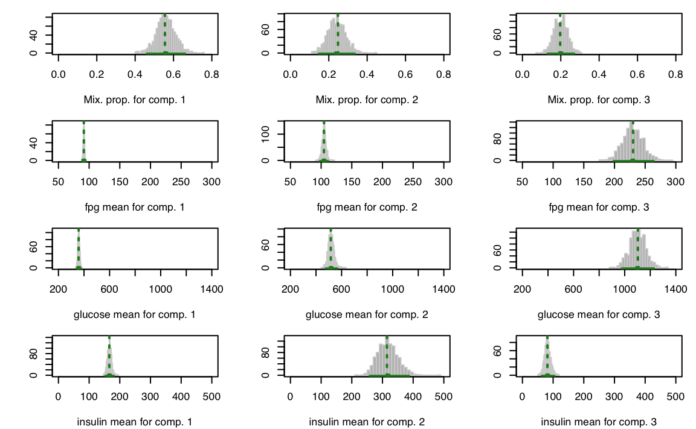
boot4 <- MclustBootstrap(mod4, nboot = 999, type = "bs")
summary(boot4, what = "se")
## ----------------------------------------------------------
## Resampling standard errors
## ----------------------------------------------------------
## Model = E
## Num. of mixture components = 2
## Replications = 999
## Type = nonparametric bootstrap
##
## Mixing probabilities:
## 1 2
## 0.04130937 0.04130937
##
## Means:
## 1 2
## 0.04669993 0.06719883
##
## Variances:
## 1 2
## 0.02376885 0.02376885
summary(boot4, what = "ci")
## ----------------------------------------------------------
## Resampling confidence intervals
## ----------------------------------------------------------
## Model = E
## Num. of mixture components = 2
## Replications = 999
## Type = nonparametric bootstrap
## Confidence level = 0.95
##
## Mixing probabilities:
## 1 2
## 2.5% 0.5364895 0.3004131
## 97.5% 0.6995869 0.4635105
##
## Means:
## 1 2
## 2.5% 4.279055 6.184439
## 97.5% 4.461108 6.449465
##
## Variances:
## 1 2
## 2.5% 0.1395796 0.1395796
## 97.5% 0.2317769 0.2317769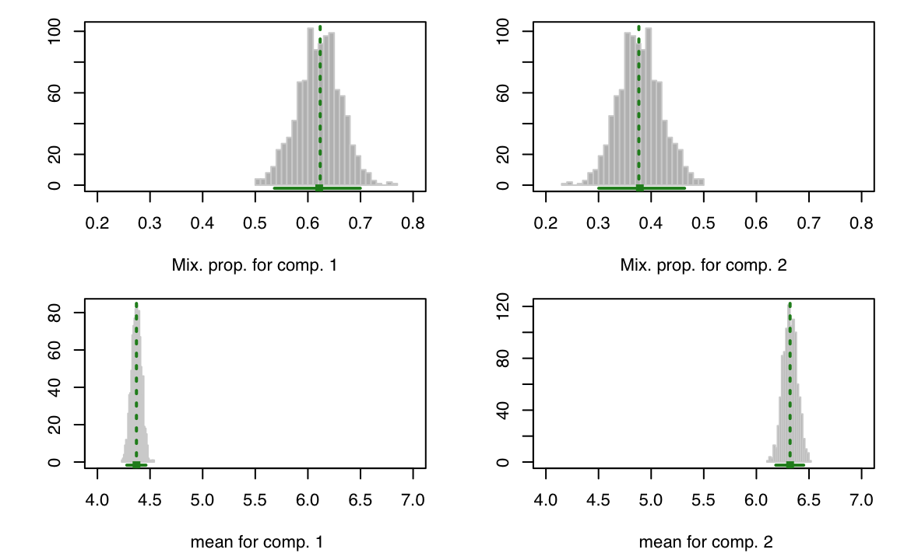
Dimension reduction
Clustering
mod1dr <- MclustDR(mod1)
summary(mod1dr)
## -----------------------------------------------------------------
## Dimension reduction for model-based clustering and classification
## -----------------------------------------------------------------
##
## Mixture model type: Mclust (VVV, 3)
##
## Clusters n
## 1 82
## 2 35
## 3 28
##
## Estimated basis vectors:
## Dir1 Dir2
## fpg 0.884389 0.92601
## glucose -0.466586 -0.20579
## insulin -0.012419 -0.31647
##
## Dir1 Dir2
## Eigenvalues 1.371 0.41864
## Cum. % 76.607 100.00000
plot(mod1dr, what = "pairs")
plot(mod1dr, what = "boundaries", ngrid = 200)
mod1dr <- MclustDR(mod1, lambda = 1)
summary(mod1dr)
## -----------------------------------------------------------------
## Dimension reduction for model-based clustering and classification
## -----------------------------------------------------------------
##
## Mixture model type: Mclust (VVV, 3)
##
## Clusters n
## 1 82
## 2 35
## 3 28
##
## Estimated basis vectors:
## Dir1 Dir2
## fpg 0.884389 0.92601
## glucose -0.466586 -0.20579
## insulin -0.012419 -0.31647
##
## Dir1 Dir2
## Eigenvalues 1.371 0.41864
## Cum. % 76.607 100.00000
plot(mod1dr, what = "scatterplot")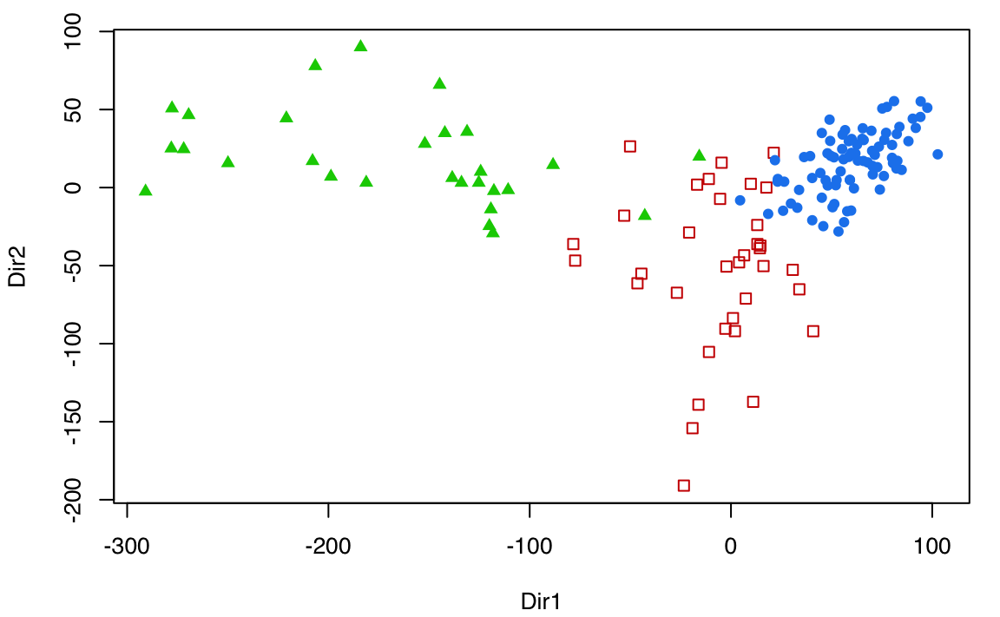
plot(mod1dr, what = "boundaries", ngrid = 200)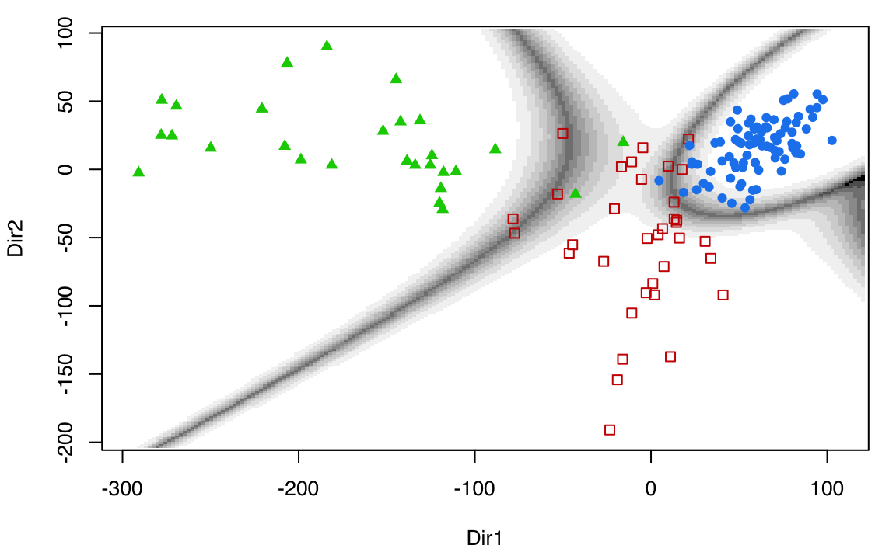
Classification
mod2dr <- MclustDR(mod2)
summary(mod2dr)
## -----------------------------------------------------------------
## Dimension reduction for model-based clustering and classification
## -----------------------------------------------------------------
##
## Mixture model type: EDDA
##
## Classes n Model G
## setosa 50 VEV 1
## versicolor 50 VEV 1
## virginica 50 VEV 1
##
## Estimated basis vectors:
## Dir1 Dir2
## Sepal.Length 0.20874 -0.006532
## Sepal.Width 0.38620 -0.586611
## Petal.Length -0.55401 0.252562
## Petal.Width -0.70735 -0.769453
##
## Dir1 Dir2
## Eigenvalues 1.8813 0.098592
## Cum. % 95.0204 100.000000
plot(mod2dr, what = "scatterplot")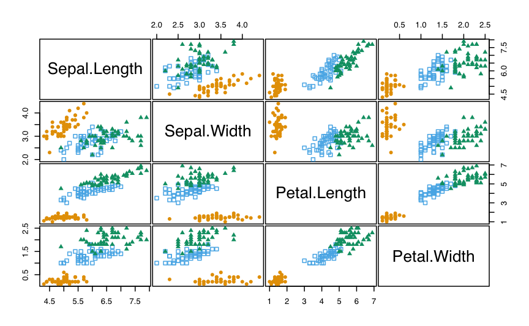
plot(mod2dr, what = "boundaries", ngrid = 200)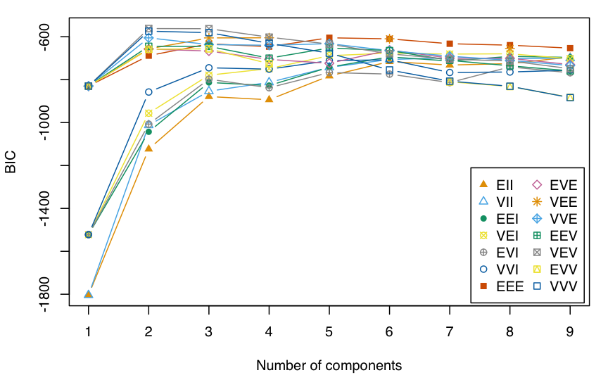
mod3dr <- MclustDR(mod3)
summary(mod3dr)
## -----------------------------------------------------------------
## Dimension reduction for model-based clustering and classification
## -----------------------------------------------------------------
##
## Mixture model type: MclustDA
##
## Classes n Model G
## counterfeit 100 EVE 2
## genuine 100 XXX 1
##
## Estimated basis vectors:
## Dir1 Dir2
## Length -0.07016 -0.25690
## Left -0.36888 -0.19963
## Right 0.29525 -0.10111
## Bottom 0.54683 0.46254
## Top 0.55720 0.41370
## Diagonal -0.40290 0.70628
##
## Dir1 Dir2
## Eigenvalues 1.7188 1.0607
## Cum. % 61.8373 100.0000
plot(mod3dr, what = "scatterplot")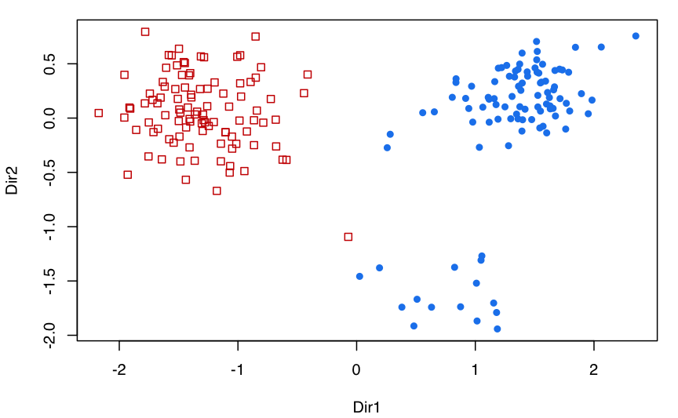
plot(mod3dr, what = "boundaries", ngrid = 200)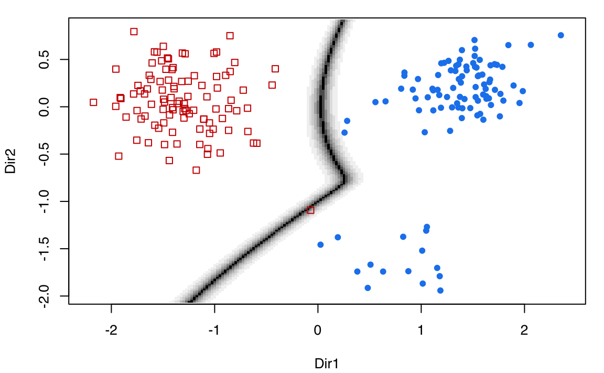
Using colorblind-friendly palettes
Most of the graphs produced by mclust use colors that by default are defined in the following options:
mclust.options("bicPlotColors")
## EII VII EEI EVI VEI VVI EEE VEE
## "gray" "black" "#218B21" "#41884F" "#508476" "#58819C" "#597DC3" "#5178EA"
## EVE VVE EEV VEV EVV VVV E V
## "#716EE7" "#9B60B8" "#B2508B" "#C03F60" "#C82A36" "#CC0000" "gray" "black"
mclust.options("classPlotColors")
## [1] "dodgerblue2" "red3" "green3" "slateblue"
## [5] "darkorange" "skyblue1" "violetred4" "forestgreen"
## [9] "steelblue4" "slategrey" "brown" "black"
## [13] "darkseagreen" "darkgoldenrod3" "olivedrab" "royalblue"
## [17] "tomato4" "cyan2" "springgreen2"The first option controls colors used for plotting BIC, ICL, etc. curves, whereas the second option is used to assign colors for indicating clusters or classes when plotting data.
Starting with R version 4.0, the function can be used for retrieving colors from some pre-defined palettes. For instance
palette.colors(palette = "Okabe-Ito")returns a color-blind-friendly palette for individuals suffering from protanopia or deuteranopia, the two most common forms of inherited color blindness. For earlier versions of R such palette can be defined as:
cbPalette <- c("#000000", "#E69F00", "#56B4E9", "#009E73", "#F0E442", "#0072B2",
"#D55E00", "#CC79A7", "#999999")and then assigned to the mclust options as follows:
bicPlotColors <- mclust.options("bicPlotColors")
bicPlotColors[1:14] <- c(cbPalette, cbPalette[1:5])
mclust.options("bicPlotColors" = bicPlotColors)
mclust.options("classPlotColors" = cbPalette[-1])
clPairs(iris[,-5], iris$Species)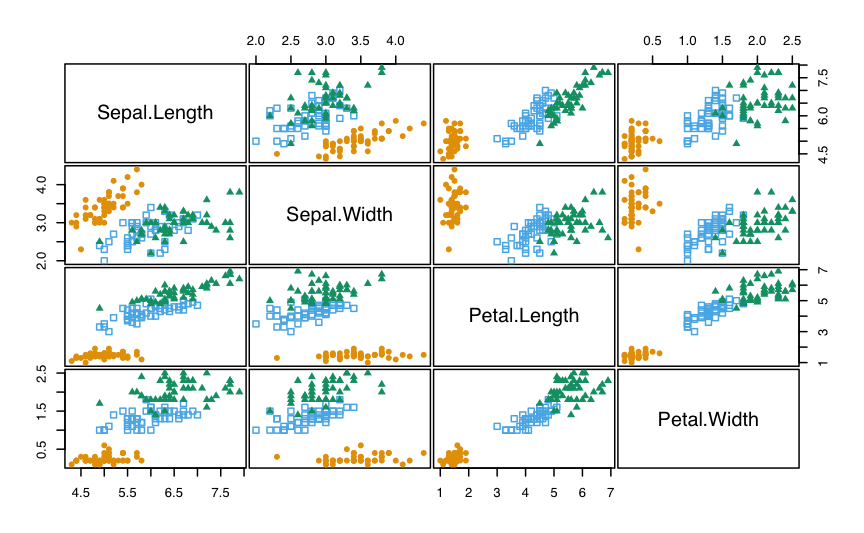
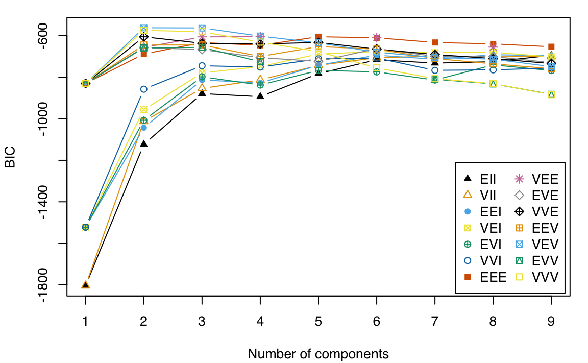
plot(mod, what = "classification")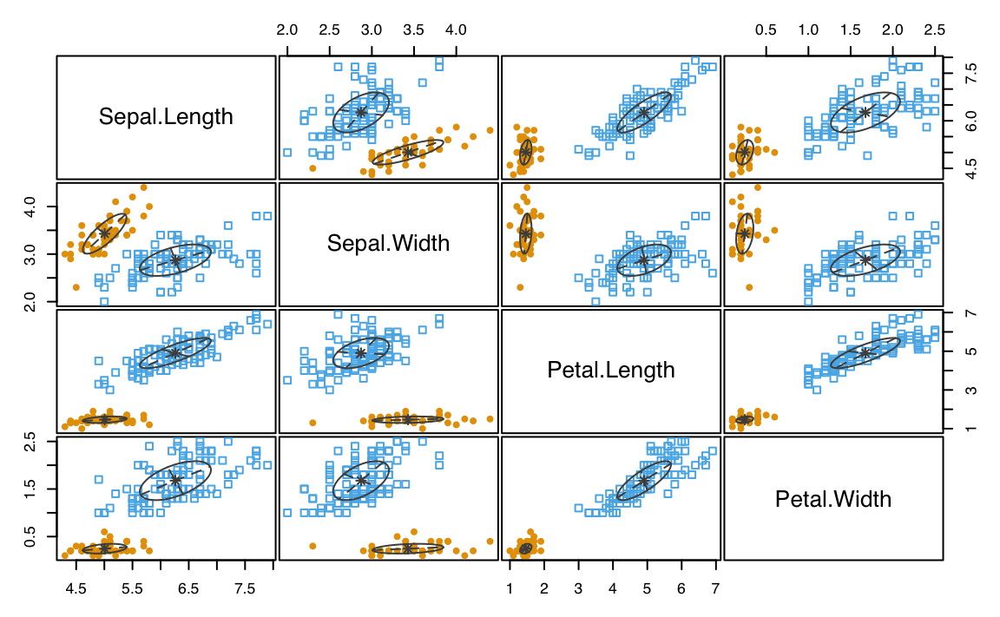
If needed, users can easily define their own palettes following the same procedure outlined above.
References
Scrucca L., Fraley C., Murphy T. B. and Raftery A. E. (2023) Model-Based Clustering, Classification, and Density Estimation Using mclust in R. Chapman & Hall/CRC, ISBN: 978-1032234953, https://mclust-org.github.io/book/
Scrucca L., Fop M., Murphy T. B. and Raftery A. E. (2016) mclust 5: clustering, classification and density estimation using Gaussian finite mixture models, The R Journal, 8/1, pp. 205-233. https://journal.r-project.org/articles/RJ-2016-021/RJ-2016-021.pdf
Fraley C. and Raftery A. E. (2002) Model-based clustering, discriminant analysis and density estimation, Journal of the American Statistical Association, 97/458, pp. 611-631.
sessionInfo()
## R version 4.5.2 (2025-10-31)
## Platform: aarch64-apple-darwin20
## Running under: macOS Sequoia 15.6.1
##
## Matrix products: default
## BLAS: /System/Library/Frameworks/Accelerate.framework/Versions/A/Frameworks/vecLib.framework/Versions/A/libBLAS.dylib
## LAPACK: /Library/Frameworks/R.framework/Versions/4.5-arm64/Resources/lib/libRlapack.dylib; LAPACK version 3.12.1
##
## locale:
## [1] en_US.UTF-8/en_US.UTF-8/en_US.UTF-8/C/en_US.UTF-8/en_US.UTF-8
##
## time zone: Europe/Rome
## tzcode source: internal
##
## attached base packages:
## [1] stats graphics grDevices utils datasets methods base
##
## other attached packages:
## [1] mclust_6.1.2 knitr_1.50
##
## loaded via a namespace (and not attached):
## [1] digest_0.6.37 desc_1.4.3 R6_2.6.1 fastmap_1.2.0
## [5] xfun_0.53 cachem_1.1.0 htmltools_0.5.8.1 rmarkdown_2.30
## [9] lifecycle_1.0.4 cli_3.6.5 sass_0.4.10 pkgdown_2.1.3
## [13] jquerylib_0.1.4 compiler_4.5.2 rstudioapi_0.17.1 tools_4.5.2
## [17] bslib_0.9.0 evaluate_1.0.5 yaml_2.3.10 jsonlite_2.0.0
## [21] rlang_1.1.6 fs_1.6.6 htmlwidgets_1.6.4